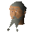

Jethick

| Config name | jethick |
| NPC id | 725 |
| Combat level | hidden |
| Options | Talk-to |
| Wander range | 5 tiles from spawn |
| Area folder | area_ardougne_west |
| Defined in | scripts/areas/area_ardougne_west/configs/jethick.npc |
Jethick
A cynical old man.
Show all 1 spawn on the world map → Open in knowledge graph →
Locations
| Area | Coordinates | Level | Count | Map |
|---|---|---|---|---|
| West Ardougne | 2540, 3305 | 0 | 1 | view |
Dialogue
JethickHello. We don't get many newcomers around here.
JethickHello, I don't recognise you. We don't get many newcomers around here.
PlayerI'm looking for a woman from East Ardougne.
JethickEast Ardougnian women are easier to find in East Ardougne. Not many would come to West Ardougne to find one. Any particular woman you have in mind?
PlayerYes, a lady called .
JethickWhat does she look like?
JethickAh yes, I recognise her. She was over here to help aid plague victims.
JethickI think she is staying over with the Rehnison family. They live in the small timbered building at the far north side of town.
JethickI've not seen her around here in a while mind you.
JethickI don't suppose you could run me a little errand while you're over there? I borrowed this book from them, can you return it?
PlayerUm... brown hair, in her twenties...
JethickHmmm, that doesn't narrow it down a huge amount... I'll need to know more than that.
PlayerSo who's in charge here?
JethickWell, King tyras has wandered off in to the west kingdom. He doesn't care about the mess he's left here. The city warder is in charge at the moment. He's not much better.
JethickHello, I don't recognise you. We don't get many newcomers around here.
Quests
Referenced in scripts
scripts/areas/area_ardougne_west/scripts/woman.rs2scripts/quests/quest_elena/scripts/doors.rs2scripts/quests/quest_elena/scripts/jethick.rs2